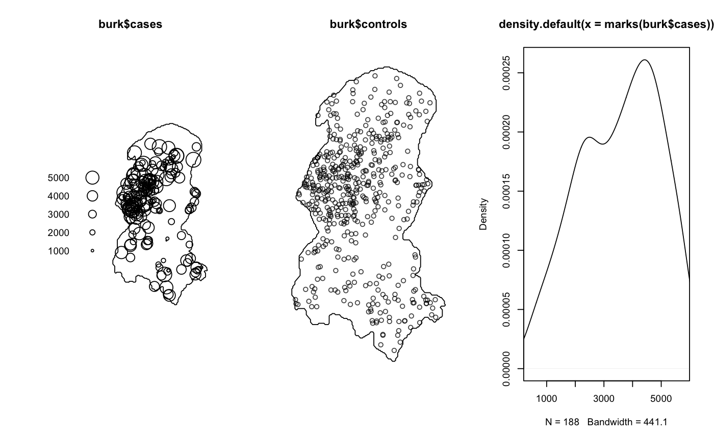

Data of the spatiotemporal locations of Burkitt's lymphoma in the Western Nile district of Uganda from 1960 to 1975.
burk is a named list with three members:
$casesAn object of class ppp giving the spatial locations (eastings/northings)
of the 188 cases of Burkitt's lymphoma recorded in individuals of various ages (mostly children); the spatial study region as a polygonal owin; as well as the time
(in days since 1/1/1960) of each observation stored as the marks of the points.
$cases.ageA numeric vector of length 188 giving the age of each individual in $cases.
$controlsAn object of class ppp giving 500 artificially simulated spatial-only
observations to pose as a `control' data set representing the at-risk population. The data were
generated from a smooth kernel estimate of the spatial margin of the cases. The similarity between the case point distribution
and the true at-risk population dispersion can be seen in e.g. Figure 2 of Middleton and Greenland (1954).
The case data were extracted from the burkitt object of the splancs R package;
see
Rowlingson B. and Diggle P.J. (2017), splancs: Spatial and Space-Time Point Pattern Analysis, R
package version 2.01-40; https://CRAN.R-project.org/package=splancs.
Bailey, T.C. and Gatrell, A.C. (1995), Interactive spatial data analysis, Longman; Harlow.
Middleton, J.F.M. and Greenland, D.J. (1954), Land and population in West Nile District, Uganda, The Geographical Journal, 120, 446--455.
data(burk) summary(burk$cases)#> Marked planar point pattern: 188 points #> Average intensity 0.01703669 points per square unit #> #> *Pattern contains duplicated points* #> #> Coordinates are integers #> i.e. rounded to the nearest unit #> #> marks are numeric, of type ‘double’ #> Summary: #> Min. 1st Qu. Median Mean 3rd Qu. Max. #> 413 2412 3704 3530 4700 5775 #> #> Window: polygonal boundary #> single connected closed polygon with 352 vertices #> enclosing rectangle: [246.4, 341] x [237.6, 419.4] units #> Window area = 11035 square units #> Fraction of frame area: 0.642par(mfrow=c(1,3)) plot(burk$cases) plot(burk$controls) plot(density(marks(burk$cases)),xlim=range(marks(burk$cases)))